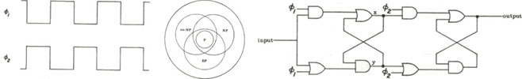

I got interested in circuit complexity in 1981 in Australia
by working for a semester
as Les Goldschlager's research assistant,
during which we worked out the details of the first paper below.
I carried that interest into my PhD thesis
and on into the 1990s. Some of the papers in
Neural Networks
and Parallel Computing
also have some circuit complexity in them too, so in spite of the fact that there
are only two papers listed below, circuit complexity was clearly
a thread that I followed for much of the 20th Century.
My coauthors in
this work include
Les Goldschlager and
my Penn State PhD student
Peiyuan Yan.
P. Y. Yan and
I. Parberry,
"Exponential Size Lower Bounds for Some Depth Three Circuits",
Information and Computation,
Vol. 112, No. 1,
pp. 117-130, 1994.
[pdf]
Abstract
Exponential size lower bounds are obtained for some depth three
circuits computing conjunction using one layer each of
gates which compute Boolean functions of
low total degree when expressed as polynomials,
parity-modulo-2 gates, and parity-modulo-q gates, where q is prime.
One of these results implies a special case of the
constant degree hypothesis of Barrington et al.
The lower bounds are obtained from
an algebraic characterization of the functions computed by the circuits:
it is shown that certain integer multiples of these functions
can be expressed as the sum of a lattice element
and a function of small value.
It is conjectured that this characterization
can be used to resolve the constant degree hypothesis.
Author's Comment
Yan and I were certain we were on the threshold of something deep here,
but we never were able to push these results any further than this.

L. M. Goldschlager and
I. Parberry,
"On the Construction of Parallel Computers from Various Bases of Boolean Functions",
Theoretical Computer Science, Vol. 43, No. 1, pp. 43-58, 1986.
[pdf]
Abstract
The effects of bases of two-input Boolean functions are characterized
in terms of their impact on some questions in parallel computation. It
is found that a certain set of bases (called the P-complete set), which
are not necessarily complete in the classical sense, apparently makes
the circuit value problem difficult, and renders extended Turing machines
and networks of Boolean gates equal to general parallel
computers. A class of problems
called EP arises naturally from this study, relating to the parity of the
number of solutions to a problem, in contrast to previously defined
classes concerning the count of the number of solutions (#P) or the
existence of solutions (NP). Tournament isomorphism is a member of EP.
Author's Comment
I contributed to this paper while employed
as Les Goldschlager's Research Assistant in 1981.
I believe that the Technical Report version was typed up by a human being on an actual
electric typewriter. Things were a lot slower in those days.
That probably explains why it took 5 years to get into print.
One of the contributions of this paper is the independent discovery of the complexity class
parity-P.
Not that Les and I get much credit for it.